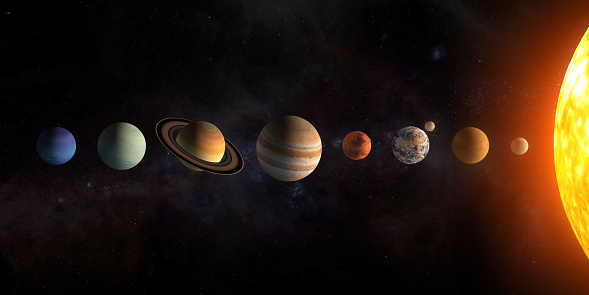
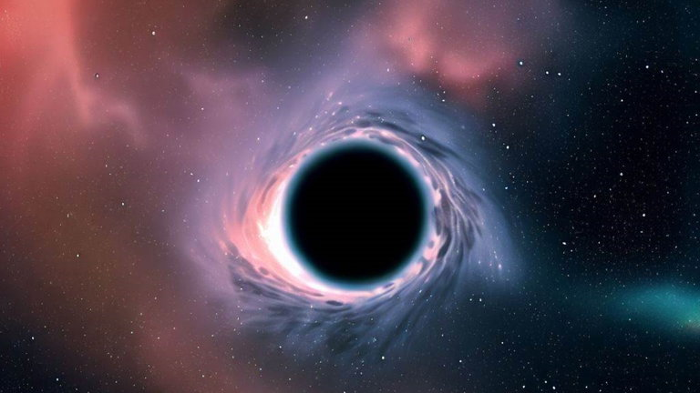
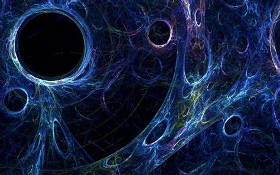
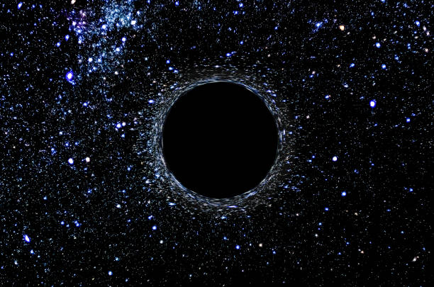
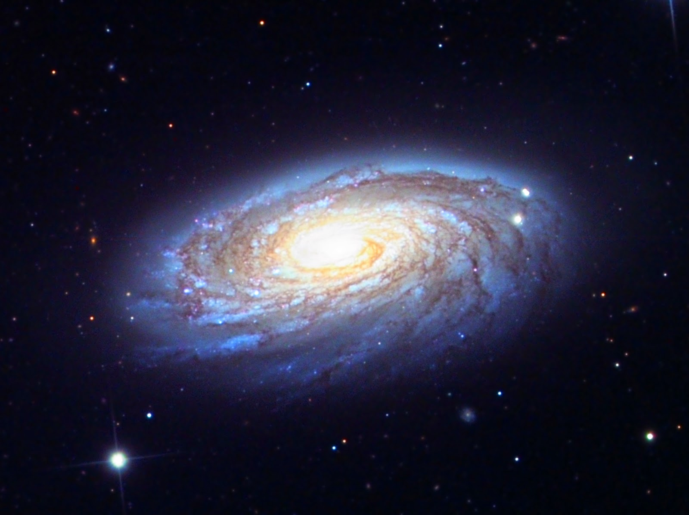
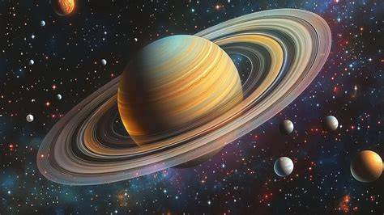
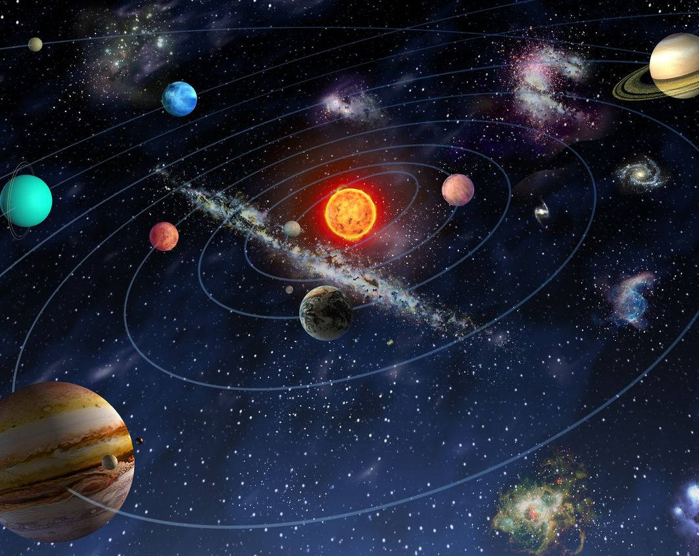

Descubre los misterios que esconde el espacio

El universo es un lugar inmenso y fascinante que guarda misterios que todavía no logramos comprender por completo. Desde enormes galaxias hasta fenómenos sorprendentes, cada rincón del espacio tiene algo interesante que descubrir.
Acompáñanos a explorar algunos de los fenómenos más sorprendentes que existen más allá de nuestro planeta.

Son regiones del espacio donde la gravedad es tan intensa que nada, ni siquiera la luz, puede escapar una vez que cruza su límite llamado horizonte de sucesos.

Es una forma de materia que no podemos observar directamente porque no emite luz. Los científicos saben que existe por sus efectos gravitacionales sobre las galaxias.

Es el nombre que se le da al fenómeno relacionado con la expansión acelerada del universo. Aunque todavía no se conoce su verdadera naturaleza, es uno de los mayores misterios de la ciencia.

¿Cómo comenzó el universo? ¿Qué hay más allá de lo que podemos observar? ¿Estamos solos? Estas preguntas motivan a los científicos a seguir investigando el espacio.
Conoce tres fenómenos que siguen sorprendiendo a la ciencia.
Los agujeros negros se forman cuando una gran cantidad de materia queda concentrada en una región muy pequeña.
Su gravedad es tan fuerte que ni siquiera la luz puede escapar de ellos. Por eso no podemos verlos directamente.
Los científicos los estudian observando cómo afectan a las estrellas y al material que los rodea.
La materia oscura es invisible porque no refleja, absorbe ni emite luz que podamos detectar.
Los científicos creen que está presente en grandes cantidades en el universo debido a la fuerza gravitacional que ejerce sobre las galaxias.
Aunque todavía no sabemos exactamente de qué está formada, su estudio ayuda a comprender cómo funciona el universo.
La energía oscura es un fenómeno relacionado con la expansión acelerada del universo.
Los científicos todavía investigan qué es y cómo funciona, ya que no se conoce su naturaleza exacta.
Su descubrimiento cambió la manera en que entendemos la evolución del universo.
Datos sorprendentes que quizá no conocías.
Porque el universo tiene una edad limitada y la luz de muchos objetos todavía no ha llegado hasta nosotros. Además, la expansión del universo estira la luz y puede hacer que sea difícil de observar.
Experimentaría efectos de gravedad muy intensos. También el tiempo transcurriría de manera diferente en comparación con alguien que estuviera lejos. Los efectos dependen de la masa y las características del agujero negro.
Porque la gravedad del Sol atrae a los planetas, mientras que su movimiento hacia adelante hace que sigan una órbita a su alrededor. Así se mantienen girando en el espacio.

Saturno es famoso por sus impresionantes anillos, formados principalmente por fragmentos de hielo y roca. Con el paso del tiempo, parte de ese material cae hacia el planeta. Por eso, sus anillos podrían desaparecer lentamente en el futuro.
Tu opinión también forma parte de este viaje por el universo.

Aquí aparecerán los comentarios guardados en este dispositivo y navegador.
Todavía no hay comentarios.
Correo: Bruno.flo@gmail.com
Teléfono: 123 4512
Esta página fue creada para compartir información, curiosidades y misterios sobre el universo.